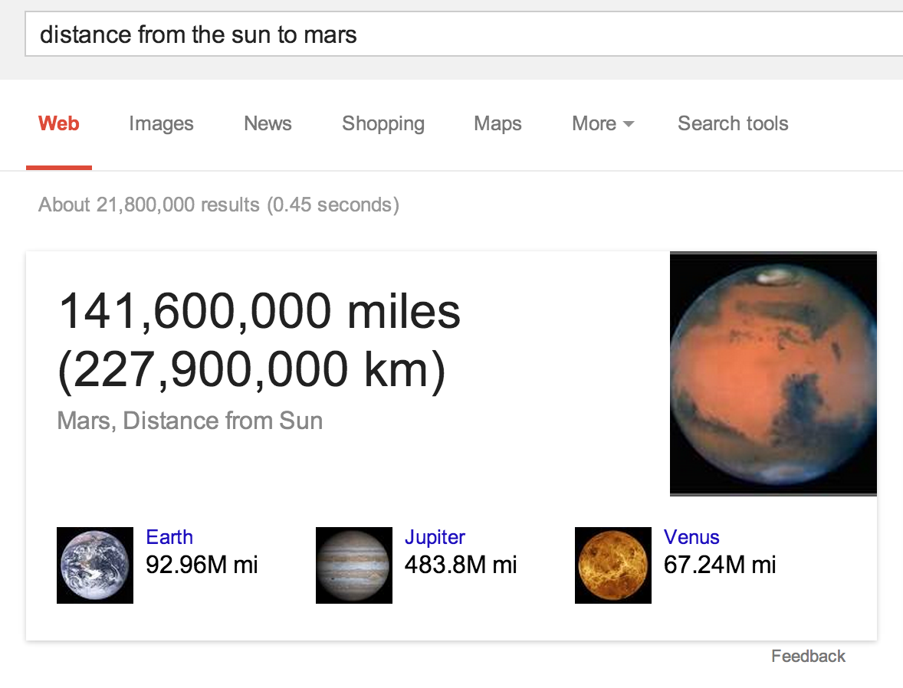

03.29.14
Posted in Uncategorized at 2:40 pm by danvk
After seeing this image posted on reddit last week, I took a deep dive into the strange world of extreme caving.
This image is big! Click through to see the whole thing.
The Krubera Cave is the deepest in the world, descending 2,197 meters from its inconspicuous entrance to its deepest explored areas. It’s located in Abkhazia, a breakaway territory in the Republic of Georgia. In some ways, caving is an even more extreme activity than high altitude climbing. Descending to the bottom of Krubera takes a team of dozens of people over a month, a month during which they’ll never see the sun.
One question I had was “why does an expedition end?” I got some answers from this amazing documentary about a 2003 expedition. Their goal was to explore this siphon at 1440m below the surface:
Read the rest of this entry »
Permalink
02.24.14
Posted in Uncategorized at 4:30 pm by danvk
This past fall, my group launched a new feature on Google Search that we call “Fact Comparisons”. It triggers for many numeric fact queries, for example distance from the sun to mars:

The idea is that, by showing you answers to related questions (“how far is jupiter from the sun?”), we can help you contextualize the answer to your original question. The number “141,600,000 miles” is hard to fathom, but it makes more sense when you see that it’s between Earth (92.96M mi) and Jupiter (483.8M mi).
If you click on one of the related images, you’ll launch into a Carousel filled with related facts:
Most numeric facts will trigger this feature. The most popular numeric facts are people’s ages and heights. A strip of famous people’s ages is pretty interesting:
A few other fun ones:
Permalink
02.10.14
Posted in Uncategorized at 1:55 pm by danvk
I’ve referenced an anecdote from Vernor Vinge’s A Fire upon the Deep several times during video calls in the last few weeks and thought I’d share it here.
The novel is a classic space opera. Two ships with infinitely powerful computers are in communication over a very narrow channel. Rather than send pixelated images to one another, the computers go to extremes to make the best use of their limited bandwidth.
Fleet Central refused the full video link coming from the Out of Band … Kjet had to settle for a combat link: The screen showed a color image with high resolution. Looking at it carefully, one realized the thing was a poor evocation…. Kjet recognized Owner Limmende and Jan Skrits, her chief of staff, but they looked several years out of style: old video matched with the transmitted animation cues. The actual communication channel was less than four thousand bits per second
Precious bits aren’t wasted on low-level features like pixels. Rather, they’re used to transmit information about the participants and “animation cues”. The computer on the receiving ship creates the most realistic video it can using those cues and the imagery that it has on file.
The picture was crisp and clear, but when the figures moved it was with cartoonlike awkwardness. And some of the faces belonged to people Kjet knew had been transferred before the fall of Sjandra Kei. The processors here on the Ølvira were taking the narrowband signal from Fleet Central, fleshing it out with detailed (and out of date) background and evoking the image shown. No more evocations after this, Svensndot promised himself, at least while we’re down here.
Vernor Vinge calls it an evocation but we’d probably call it an avatar. Even with all its power, their computer has trouble reproducing motion and is constrained by its out-of-date database.
“Strange,” interrupted Pham. “The pictures were strange.” His tone was drifty.
“You mean our relay from Fleet Central?” Svensndot explained about the narrow bandwidth and the crummy performance of his ship’s processors…
“And so their picture of us must have been equally bad… I wonder what they thought I was?”
“Unh…” Good question. … “… wait a minute. That’s not how evocations work. I’m sure they got a pretty clear view of you. See, a few high-resolution pics would get sent at the beginning of the session. Then those would be used as the base for the animation.”
This is more or less how a digital video is encoded: there are a few high-resolution key frames followed by information about how the pixels change in each successive animation frame. Vinge’s computers do something similar. But instead of encoding how the pixels change, they encode at a higher level of abstraction. Presumably they’re recording that a hand moved or that a particular word was said, and the computer at the other end will do its best to update the keyframe to reflect this.
In a world with limited bandwidth but infinite computing power, this is how things should work. Next time you’re in a video call and the image drops out or becomes grainy, think about how much better it would be if your counterpart turned into a cartoon instead!
Permalink
08.18.13
Posted in Uncategorized at 8:57 am by danvk
A few months ago my group at work launched the Statistics Knowledge Panel, which shows you an interactive chart when you search for a public data statistic on Google:
The feature uses query refinements to anticipate other statistics you might be interested in (e.g. “population india” → “population china”). These put the original statistic into context. We got a shout out from Amit Singhal at Google I/O when we launched!
Here are a few fun queries you can try:
The charts work great on mobile and tablet, too!
Permalink
08.15.13
Posted in Uncategorized at 5:39 am by danvk
Six years ago I created dygraphs, an interactive JavaScript charting library. Four years ago, I open sourced it. Yesterday, we officially released version 1.0.0.
The project continues to grow, sometimes seemingly in spite of itself, gaining new users and contributors. Robert’s blog post describes the reasons for doing versioned releases. Personally, I’m quite excited about having the freedom to change core behaviors without worrying about upsetting users!
The key features of dygraphs are, and remain, the ease of quickly creating a chart and the ability it gives you to explore large data sets. The canonical chart is a comparison of temperatures for three years in SF and NYC. You can zoom in, see individual data points and change the rolling average:
Permalink
« Previous Page — « Previous entries
Next entries » — Next Page »
{kind=link}
{kind=link}